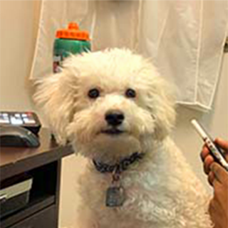
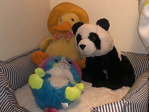
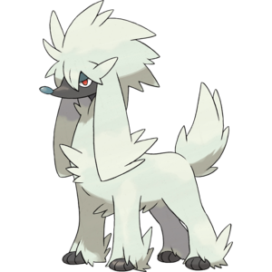

About Pongo
Birthdate:
June 30th, 2021
Adoption date:
September 16th, 2021
Breed:
Bichon Frise
Gender:
Male

Prior to the first time me and the little dog Pongo met, me and my older cousin had been driving from London to Tillsonburg which felt like almost 2 hours which where Pongo was born. The lady handed us Pongo who could barely walk but made it seem easy at the same time, he didn't bark at all.

He seemed shy, and still does to be honest. Until he's very comfortable with you at least. His favourite plushes are Peter Panda, Diddy Duck and Rick Raccoon. And one fun fact about him is that he always barks when he sees the Pokemon Furfrou! Maybe it's because they're both dogs.
